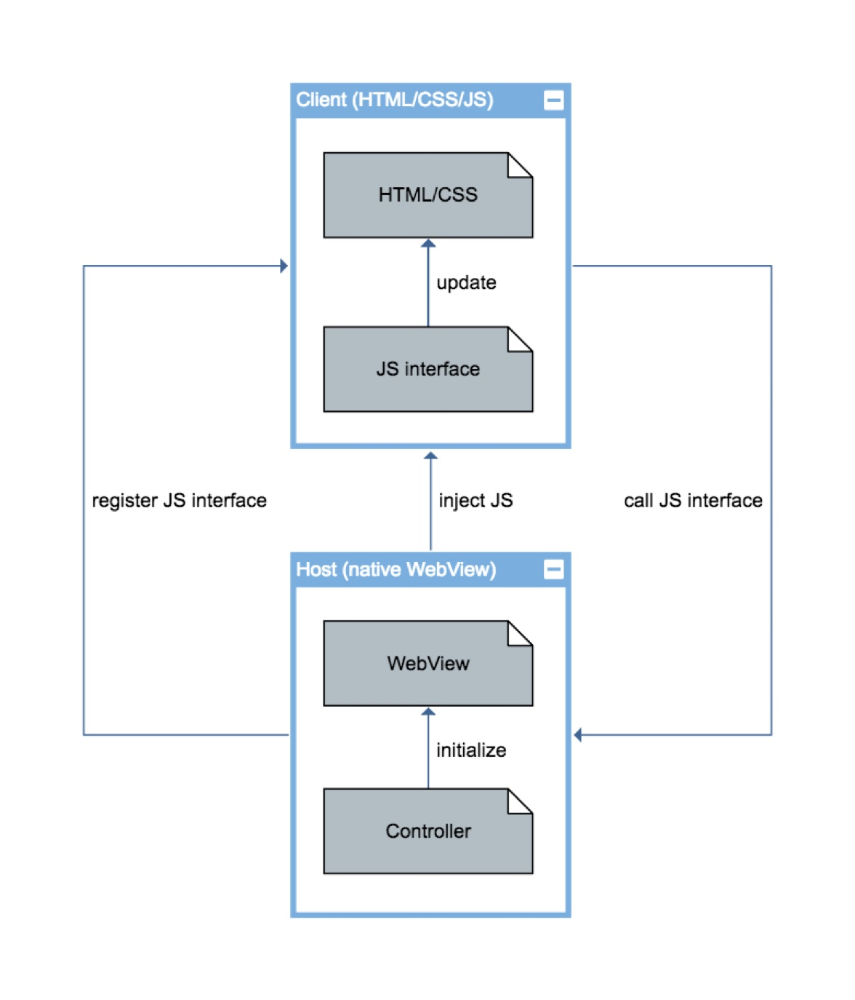

Mobile App Entwicklung
Lektion 5
Hybrid-Apps
Rückblick
- Einführung Android
- Benachrichtigungen
Übersicht Lektionen
- Vorstellung, Einführung und Aufsetzen von Werkzeugen
- MVVM, Bindings, Controls, Debugging
- Dialogs, Styling, IOC, Testing
- Benachrichtigungen (Lokal/Push/Remote)
- Hybrid-Apps
- Datenbanken (SQLite); HTTP Client
- Security & Biometrie
- LK1; Projektarbeit
- MLZ Präsentationen; Themen nach Wahl
Ablauf der Lektion
- Übersicht: Hybrid Applikationen
- Interoperabilität mit dem nativen Teil
- Schnittstelle zwischen Web und nativem Code entwerfen
- Kleines Beispiel implementieren
- Ansatz präsentieren
Vorteile
- Hybrid-Ansatz ist etwa 50% des Markts (obwohl dies schwer zu beweisen ist)
- Auch Mobile Web Browsers unterstützen die modernste HTML/CSS/JS APIs
- Erlaubt Plattformunabhängiges Entwickeln für iOS, Android, und Desktop-Web gleichzeitig
- Es ist leichter Web- als iOS/Android Entwickler zu finden
- Aktualisieren der App kann ohne Store-Update statt finden
Nachteile
- Wirkt nicht immer so fliesend wie natives Code (obwohl das wird mit neueren Releases immer besser)
- Man muss trotzdem beide API-Welten verstehen (Native & Web)
- Bei natives Code nicht so tiefgehend
- Hingegen bei Web-Entwicklung schon
Umsetzung
- Natives Teil deklariert ein JavaScript-API
- Web Browser kann den nativen Teil "antworten"
- Web kann mit Nativen Komponenten kombiniert werden (z.B. für Sicherheitsrelevanten Eingaben wie PINs)
WebView Komponenten
WebView Details
- Die Kontrolle ist ein Umhüllung um ein eigenes Prozess
- Man kann auch mehrere WebViews einsetzen
- HTML-Seiten können entweder aus App-Ressourcen oder von Remote-URLs geladen werden
- CORS muss wie immer berücksichtigt werden
Hybrid Architecture
Hybrid-Beispiel
- Beispiel-Implementation in
APE2021_App - Branch:
feature/day5_hybrid_apps - Verzeichnis:
/Hybrid - Umsetzung: Xamarin mit nur Android
JS-Schnittstelle deklarieren
public class JavaScriptInject : Object {
///
/// Annotate methods with the
[JavascriptInterface]
[Export("doSomething")]
public void FromJavaScript() { /* ... */ }
///
/// Annotated methods can also accept parameters.
///
[JavascriptInterface]
[Export("doSomething")]
public void FromJavaScript(string message) { /* ... */ }
}
JS-Schnittstelle registrieren
// Set the content layout which contains a simple web view.
SetContentView(Resource.Layout.activity_main);
// Extract the web view from the layout.
var webView = (WebView)FindViewById(Resource.Id.webView);
// Configure WebView to allow JS and inject our custom interface.
webView.Settings.JavaScriptEnabled = true;
webView.AddJavascriptInterface(new JavaScriptInject(this), "Native");
// Load a local HTML file.
webView.LoadUrl("file:///android_asset/index.html");
WebView -> Native
Mit Native.doSomething() ausführen
<input type="button" onclick="Native.doSomething()" value="Invoke native" />
...oder mit Parametern ausführen
<input type="button" onclick="Native.doSomething('Another message...')" value="Invoke native with param" />
Native -> WebView
webView.EvaluateJavascript("do some JS magic...", null);
public class Callback : Java.Lang.Object, IValueCallback
{
public void OnReceiveValue(Object value) {
// Do something with the value...
}
}
webView.EvaluateJavascript("do some JS magic...", new Callback());
Hybrid-App
- Native -> Web
- Web -> Native

Fragen?

Übungen
- Element selektieren und dessen Inhalt anpassen
- Daten vom Server abfragen und einem Dokument hinzufügen

Ereignisse
Hier geht es um Ereignisse aus der Laufzeitumgebung abzufangen und darauf zu reagieren.
- Beispiele
- Abfangen
- Reihenfolge
- Unterdrücken
Ereignisse: Generell
| onclick | Element wurde geklickt |
|---|---|
| onmouseenter | Maus schwebte über das Element |
| onmouseleave | Maus schwebte weg vom Element |
| onkeypress | Taste wurde betätigt |
| oninput | Wert wurde geändert |
Siehe GlobalEventHandlers für eine vollständige Liste.
Ereignisse: Laden
| Name | Beschreibung | Target |
|---|---|---|
| onload | Alle Ressourcen eines URLs wurden fertig geladen | window |
| DOMContentLoaded | Dokument wurde fertig geladen | document |
Ereignisse abfangen
- Ereignisse werden vom Browser ausgelöst.
- Z.B. Mausklicks oder -bewegungen, Wert-Änderungen, usw.
- Mögliche Ereignisbehandlungsmethoden:
- 🤨 Attribut auf dem Element
- 🤨 EventHandler
- 😎 EventListener
Ereignisobjekt
target |
Auslösendes Element |
|---|---|
currentTarget |
Element mit EventHandler |
timeStamp |
Zeitpunkt des Ereignisses |
view |
Referenz auf window (oder frame) |
offsetX/offsetY |
relative Mausposition |
onclick Attribut
- 😎 Ist klar welcher Script ausgeführt wird
- 🤨 Wird im globalen Kontext ausgeführt
- 🤨 Mischt Darstellung mit Logik
- 🤨 Führt zu dupliziertem Code
- 🤨 Obsoleter Zugriff auf dem Ereignisobjekt
onclick EventHandler
- 😎 Wird im Funktionskontext ausgeführt
- 😎 Darstellung und Logik sind separat
- 😎 Meidet dupliziertes Code
- 🤨 Überschreibt andere EventHandlers
const buttons = document.getElementsByTagName("button");
for (const button of buttons) {
button.onclick = e => console.log(e.target.id);
}
click EventListener
- 😎 Wird im Funktionskontext ausgeführt
- 😎 Darstellung und Logik sind separat
- 😎 Meidet dupliziertes Code
- 😎 Lässt andere EventListeners stehen
const buttons = document.getElementsByTagName("button");
for (const button of buttons) {
button.addEventListener("click", e => console.log(e.target.id));
}
Funktionen und this
function |
this referenziert das Ereigniselement |
||||
|---|---|---|---|---|---|
=> |
this referenziert das umliegende Kontext
|
EventListener: Entfernen
- Listeners können mit
removeEventListener()entfernt werden - Dazu ist eine fixe Referenz nötig (z.B. eine Funktion)
const logId = e => console.log(e.target.id);
const button = document.getElementById("a");
button.addEventListener("click", logId);
button.removeEventListener("click", logId);
Funktionen: Kurzform
Bei einer benannten Funktion kann man das auflisten von Parametern weglassen, wenn die Parameter einfach weitergegeben werden sollen.
const log = e => console.log(e);
// Die folgende Aufrufe sind Equivalent
document.AddEventListener("click", e => console.log(e))
document.addEventListener("click", e => log(e));
document.addEventListener("click", log);
Event Reihenfolge
- Normalerweise werden Ereignisse bei allen "Parent"-Elementen ausgelöst
- In
addEventListenerkann man mit dem Setzen des dritten Parameterscaptureauftruesicherstellen, dass das Ereignis zuerst bei diesem Element ausgelöst wird. - Mit
stopPropagation()kann man das propagieren verhindern
Event Flow
"Capture" zuerst und danach "Bubbling"

Normale Reihenfolge
Elemente fangen Events in die "Bubbling" Phase ab.
const log = e => console.log(e.currentTarget.nodeName);
document.addEventListener("click", log);
form.addEventListener("click", log);
button.addEventListener("click", log);
Bei einem Klick auf dem Button kommt:
BUTTON
FORM
#document
Angepasste Reihenfolge
Elemente können in die "Capture" Phase Events abfangen.
const log = e => console.log(e.currentTarget.nodeName);
document.addEventListener("click", log, { capture: true });
form.addEventListener("click", log);
button.addEventListener("click", log);
Bei einem Klick kommt:
#document
BUTTON
FORM
Propagieren verhindern
stopPropagation()bricht Event-Handling ab
const log = e => {
console.log(e.currentTarget.nodeName);
e.stopPropagation();
};
document.addEventListener("click", log, { capture: true });
form.addEventListener("click", log);
button.addEventListener("click", log);
Bei einem Klick kommt:
#document
Default Verhalten
preventDefault()unterdrückt das Default Verhalten des Browsers (z.B. Navigieren bei einemaElement)
DuckDuckGo
const duckDuckGo = document.getElementById("search");
duckDuckGo.addEventListener("click", e => {
if (!confirm("Are you sure?")) {
e.preventDefault();
}
});
Ereignisse
- Event Handlers
- Event Listeners
- Reihenfolge
- Propagieren verhindern
- Default verhindern
Fragen?
Übungen
- Klick-Handler für ein Button schreiben
- Klick-Handler für ein Link schreiben
Jest Snapshots
- Die Funktion
toMatchSnapshot()speichert die Erwartung in einer Datei - Beim ersten Ausführen wird die Datei einfach geschrieben
test("initialize", async () => {
const l = document.getElementById("l");
await new application().initialize();
expect(listItems.innerHTML).toMatchSnapshot(); // <-- Snapshot
});
Updating Snapshots
- Bei Änderungen schlägt der Test fehl
- Snapshots aktualisieren mit
jest -uim Terminal - WebStorm zeigt Links im Test-Runner an